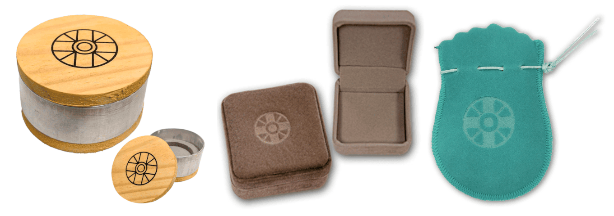

Cuidados com o Ohikari +

- Uso exclusivo: O Ohikari (Medalha da Luz Divina) é de uso exclusivo do membro que teve a permissão espiritual de recebê-lo. Sendo assim ele não deve ser oferecido ou emprestado a terceiros;
- Não é permitido: Em hipótese alguma, o ministrante pode transmitir o Johrei sem o Ohikari;
- Utilização: Como um objeto sagrado e pessoal, ele deve ser utilizado por dentro da vestimenta;
- Corrente do Ohikari: Não utilizar na corrente do Ohikari qualquer tipo de pingente. A corrente deve ser de uso exclusivo dele e seu comprimento ideal deve ser na altura do estômago;
- Banho: Não se deve tomar banho com a medalha; portanto, antes de entrar ao banho é necessário guardá-la em um recipiente e local apropriados;
- Ao guardar: O Ohikari jamais deve ser guardado diretamente em gavetas ou bolsas misturado a outros objetos ele deve ser posto em uma caixinha própria não havendo uma caixinha pode-se colocá-lo, provisoriamente, em uma folha de papel branco que não tenha sido usada;
- Atividades: O Ohikari pode ser levado à praia, piscina ou atividades esportivas desde que haja um local e recipiente próprios e seguros. Não há problema em portar o Ohikari durante o repouso ou na intimidade do casal. No entanto, caso haja algum tipo de desconforto ou inconveniência, pode-se guardá-lo na caixinha adequada;
- Queda: Em caso de queda do Ohikari por qualquer motivo, ele deve ser trazido imediatamente a unidade religiosa para ser reconsagrado pelo ministro responsável. A queda do Ohikari tem sempre uma razão espiritual e carece de profunda reflexão. Enquanto a medalha não for reconsagrada, o membro não deve ministrar Johrei, mas pode mantê-lo no pescoço normalmente;
- Cerimônia de Reconsagração: A cerimônia de reconsagração do Ohikari, significa receber o Ohikari novamente; portanto, o sentimento e a postura devem ser adequadas;
- Dúvidas: Qualquer dúvida deve ser esclarecida com o responsável da difusão ou um assistente de ministro.